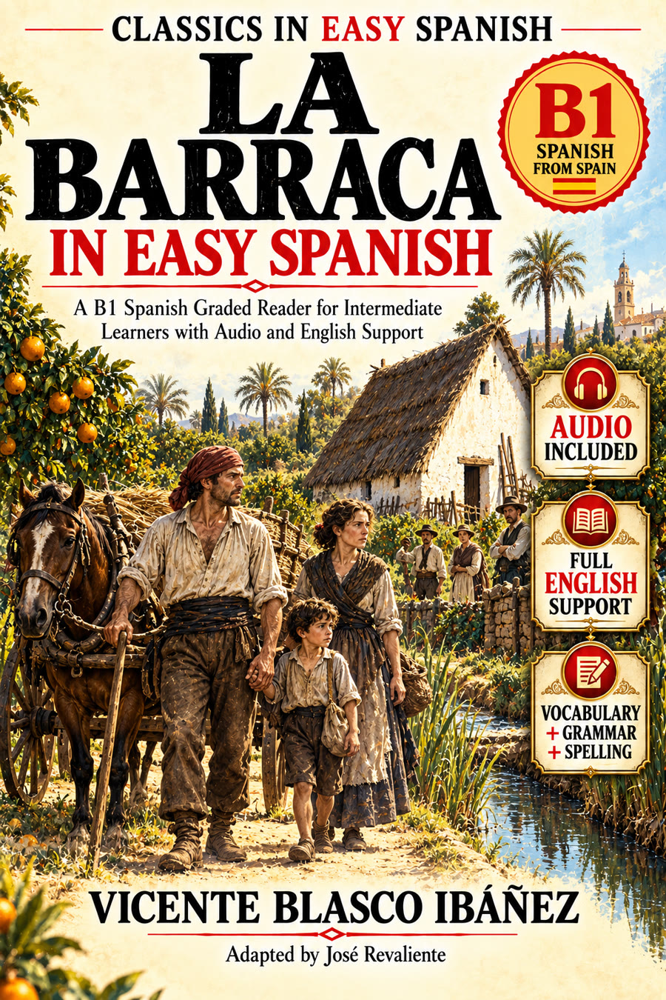

Spanish audio companion for the B1 pedagogical adaptation of Vicente Blasco Ibáñez's classic novel.
Vicente Blasco Ibáñez
Adapted by José Revaliente
Listen while reading the corresponding chapter in the book.
Read first. Listen on a second pass. Use the support material in the book only when useful. Story first.
The same Spanish audio can accompany the English-, French-, German-, Italian-, Portuguese- and other support-language editions because the Spanish story remains the same.
No sign-up required.